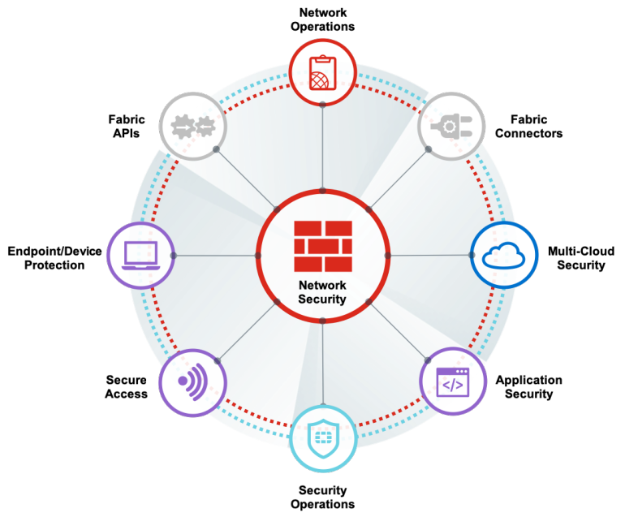

Project Ideas
To have a great project idea is amazing, to have one that can help our country is even better. Our group has decided that Gavin's idea
has potential to help out the current drug problem in our country. This wouldn't be a small project to achieve and would require the government to step in
and put in some mandatory legislations that require the pharmacies to get on board.
Not only would this project possibly help Australia's prescription drug epidemic it would also create many more jobs in various areas in I.T to continue
help maintain this infastructure in all of our states.
The Dependance Cork in its most basic description would be a way to stop patients filling their multiple prescriptions at many pharmacys.
The concept would be a 24/7 cloud based database that would have all chemists networked to it to see when a person has filled a prescription last.
So one chemist could see a red flag if another had filled the same prescription for drugs of dependence on the same day, therefore avoiding the ability
for people to stock up on their drugs of choice.

One of the biggest musts of this project would be the networks security, people have to know that their data and personal information is secure. This should be a 24 hour monitoring service as there are
pharmacies open 24 hours a day as well as there could be incoming cyber attacks. Patient data is a high commodity therefore would need the best security. The pharmacists would have individual secure employee log ins
to monitor who is accessing and entering data, as well as logs being kept of IPs that have accessed the database being sent to a monitoring agency. Not only would the logs have to be monitored, a secure data center which would be needed
would also be continously monitored.

The project would need its own secure software application to be written, tested and implemented along with training for all users involved from end users, installation engineers to support services.
Documentation to be written including user manuals, installation manuals and support manuals would be of a requirement as with any new software. Support with trouble shooting skills would be required
24/7 in the event there are problems with the system, as it must remain live at all times to continue to be effective in its application towards the reduction of drug misuse.
It is such a large scale project to implement in society but we believe it would be a success as well as beneficial to many doctors, pharmacists, hospitals and of course the patients themselves.
Less money would go into funding rehabilitation, doctors would be able to see more patients as people effected wouldn't have a way to stock up on their prescription drugs.There would also be less
drug overdoses as an oversupply would cease in the community.